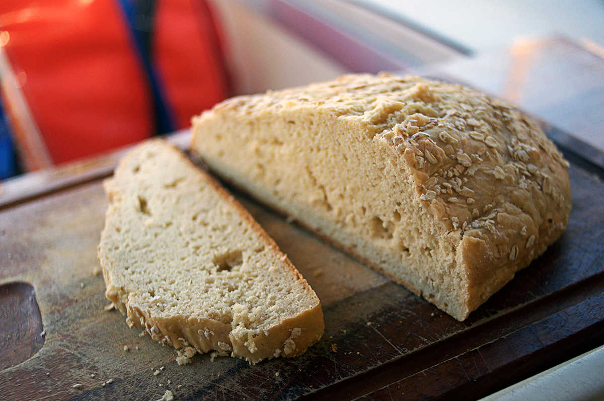

beer bread
1 loaf — 60 minutes
Recipe location: Sidney, BC. Canada.
The idea of making beer bread came from a book written by Lin Pardey called "The Care and Feeding of the Offshore Crew". In this book, Lin talks about cooking at sea and has an entire chapter dedicated to baking onboard. In this chapter, the author talks about the many ways to make fresh bread while sailing, including a quickbread recipe that uses 3 basic ingredients: flour, sugar and beer.
Beer bread you say? Right up my alley! The next day I gave it a try, the result is fantastic — surprising given the little effort it takes to make it.
The best thing about this bread, is that it can taste different everytime. Using different beer, will change the taste and color of the bread. I tried baking with an IPA (21st amendment), a Hefeweizen (Sunriver brewing co) and a brown ale (Hobgoblin).
If you have self-rising flour, you can omit the baking powder and salt. You can use even less ingredients if you have a craft beer that has live yeast sediment at the bottom of the bottle. If you have a beer like that only flour, sugar and beer will do. Have fun experimenting with beers in your bread!
We made a video of the beer bread-making process, check it out here.
 all purpose flour 240 g
all purpose flour 240 g salt 1.25 g
salt 1.25 g baking powder 7 g
baking powder 7 g granulated sugar 45 g
granulated sugar 45 g beer 330 ml (1 can)
beer 330 ml (1 can) cornmeal 20 g
cornmeal 20 g canola oil 15 ml
canola oil 15 ml rolled oats 30 g
rolled oats 30 g
beer bread
- Preheat your oven at 180 °C (350 °F).
- In a large bowl, mix 240 g (2 cups) of all purpose flour, 2.5 g (1/2 tsp) of salt, 7 g (1 1/2 tsp) of baking powder, 45 g (3 tbsp) of sugar and 330 ml (1 can) of beer. Mix well, and add extra flour if the dough is too sticky — no kneading is required.
- Coat the bottom of your bread pan with 15 ml (1 tbsp) of vegetable oil, make sure to spread it out evenly, and thinly. Sprinkle ~20 g (2 tbsp) of corn meal in your bread pan, or tray, shake the cornmeal around so it covers the entire bottom.
- Transfer the bread dough into the pan. Sprinkle 30 g (~3 tbsp) of oats on top of the bread, press them down into the dough lightly.
- Bake for 1 hour.
- Let cool on a dish towel, or rack.